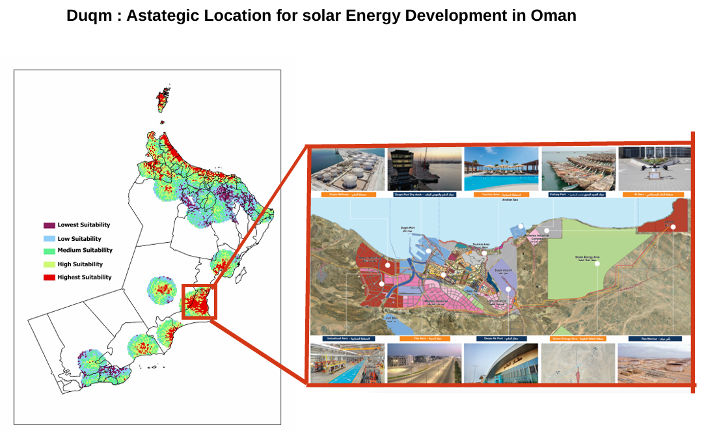
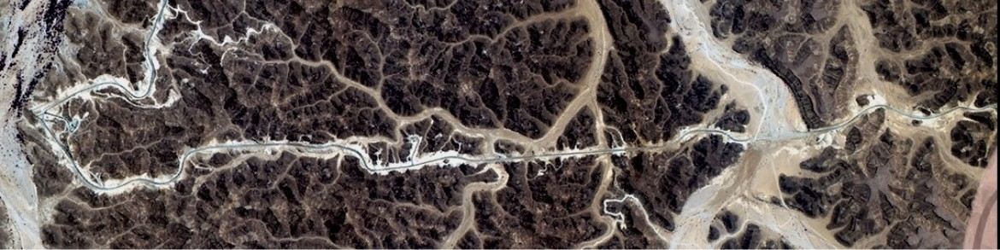
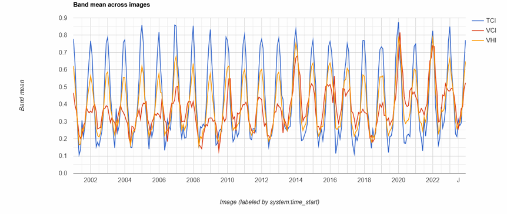
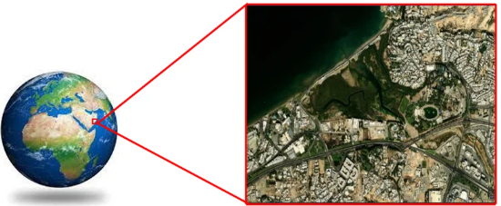
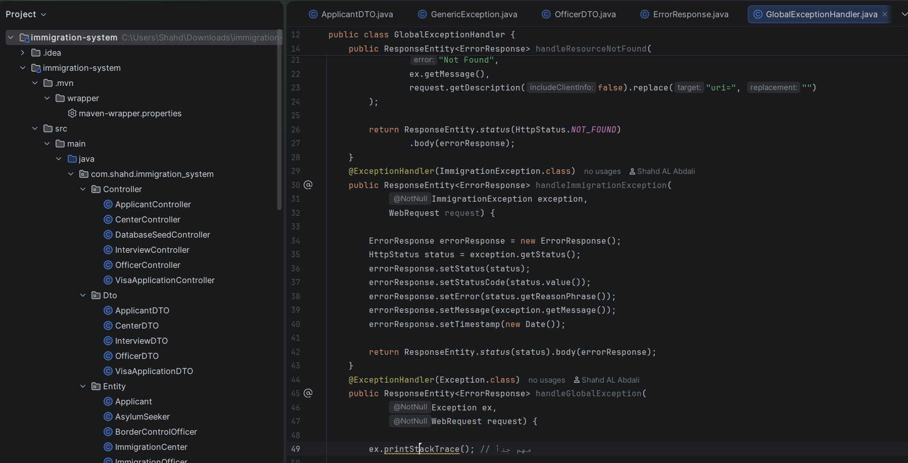

Solar Energy Site Selection in Oman
GIS suitability analysis for solar energy development using environmental and infrastructural factors.
View Project →GIS Graduate from Sultan Qaboos University specializing in spatial analysis, remote sensing, and environmental modeling.
View Projects

GIS suitability analysis for solar energy development using environmental and infrastructural factors.
View Project →
Monitoring drought trends using MODIS satellite imagery and climate indices in GEE.
View Project →
MaxEnt-based modeling to identify suitable areas for mangrove restoration and conservation.
View Project →GIS graduate from Sultan Qaboos University with experience in GIS, Remote Sensing, Spatial Analysis, and Environmental Modeling. Skilled in ArcGIS Pro, Google Earth Engine, FME, and Python. Passionate about using geospatial technologies and software development to solve real-world challenges.


Java Spring Boot application for managing applicants, interviews, visa applications, and immigration officers.
Java OOP application for managing patients, doctors, appointments, and hospital records.